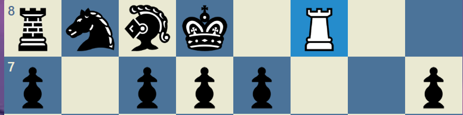

체스하쉴? 체크메이트
- home
- 체스의 기물
- 스테일 메이트
- 앙파상
- 캐슬링
- 오프닝
- 체크메이트
체스에서 킹이 공격받은 경우를 우리는 체크라고 부릅니다.
체크메이트(메이트라고도 부릅니다.)는 공격받은 킹이 체크를 벗어날 수 없는 경우입니다.
이 때, 경기는 상대 킹을 체크메이트한 선수의 승리로 끝납니다.
체크메이트는 아주많은 경우가 있습니다

이건 백랭크 체크메이트입니다 룩으로 체크라 도망가든 먹어야 하는데 먹을수가 없으니 킹이 움직여 피해야합니다
하지만 자기팀의 기물이 킹이 도망갈곳을 모두 차지했기때문에 킹이 도망갈데가 아무곳도 없습니다 따라서 공격받은 킹이 체크를 벗어날 수 없는 경우라서
체크메이트 입니다
이것이 케슬링 약점입니다
즉 만약 상대방이 케슬링했다면 한번 기회를 노려보세요